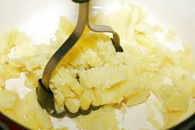

Mashed Potatoes

Creamy Mashed Potatoes for the whole crew
These mashed potatoes will give you the perfect chunky to creamy ratio.
They will make you wonder why you don't eat more starchy foods. Starch is
yummy in my tummy. Also starch and creams is OP.
Ingredients
- 6 Russett Potatoes
- 2 sticks of Kerrigold Butter (Salted)
- Green Onion
- 1/4 cup of sour cream
- 1/4 cup of cream cheese
Steps
- Peel all six potatoes
- Cut each potato in half
- Cover halved potatoes in water. Let sit for 15 minutes
- Bring potatoes to a boil and then turn heat down till water
is somewhat rolling
- Stab potatoes with a Chefs knife to see if they are soft enough.
If the potatoe easily slides off the knife then they are ready
- Drain water from pot and let potatoes release steam for 10 min
- Mash each potato half until mixture is chunky. while continuing to Mash
add the butter, sour cream, and cream cheese in particular order
- Dice onions and garnish finished potatoes